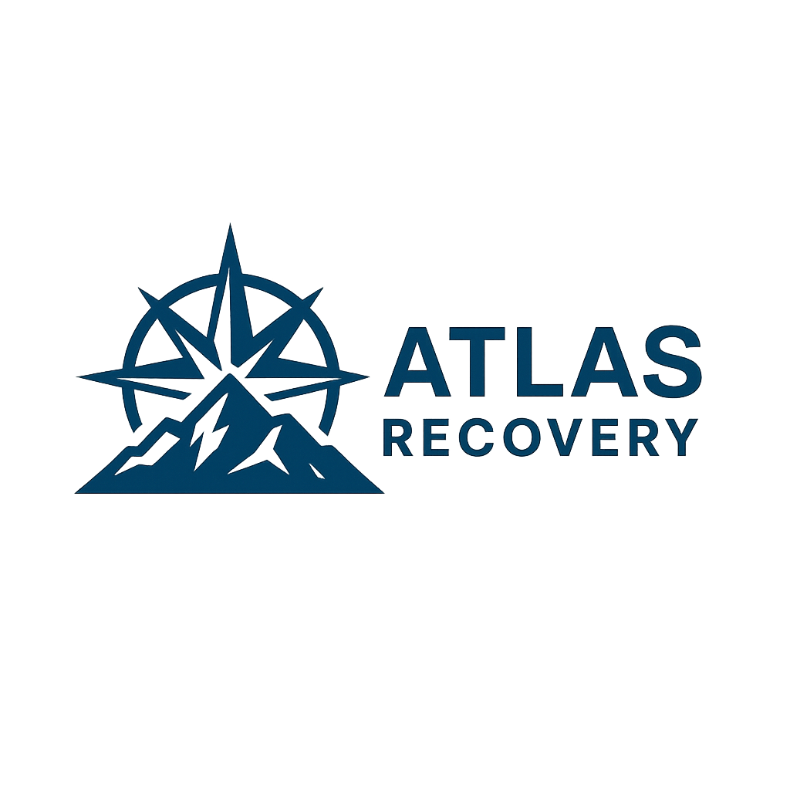

Accepting new patients in Colorado starting January 1, 2026
Atlas Recovery provides addiction medicine and psychiatry via secure telehealth, serving adults across Colorado.
We are finalizing enrollment and credentialing and will begin scheduling appointments on January 1, 2026.
Referral / inquiry email (activating prior to launch):
info@atlasrecovery.health
info@atlasrecovery.health